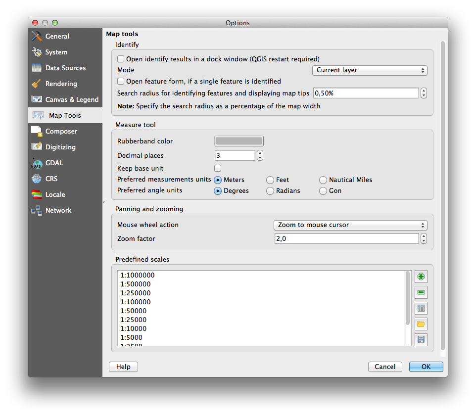
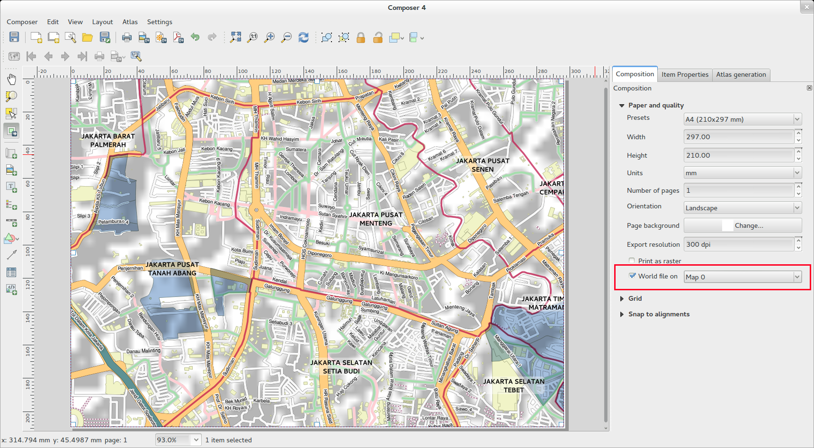
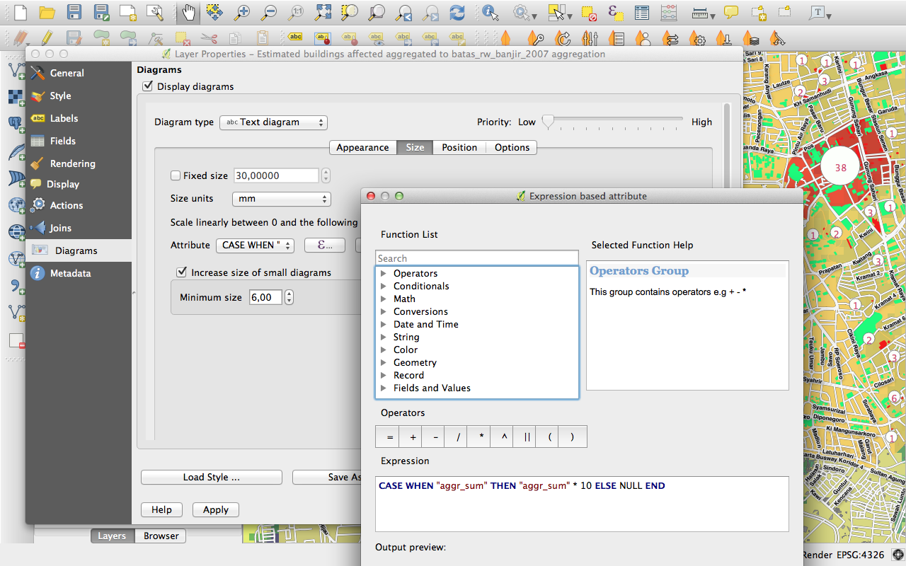

QGIS 2.2の変更履歴¶
QGIS 2.2.0の次のリリースのログを変更します。このリリースは、磨きとパフォーマンスに非常に重点を置いています。ユーザーインターフェースの一貫性とプロフェッショナルな使い方（使い勝手の良さ）を高めるために、多くの新機能、改良、強化が加えられました。コンポーザ（印刷準備地図を作成するために使用）は、大きな地図作成出力を作成するためのより実行可能なプラットフォームにするために多くの作業を行ってきました。
新しい機能がソフトウェアに追加されるたびに、新しいバグが発生する可能性があります。このリリースで問題が発生した場合は、QGISバグトラッカー<http://hub.qgis.org> `__にチケットを提出してください。
私たちは、開発者、ドキュメント作成者、テスター、そして時間と労力をボランティアしている（あるいは人々に資金を提供する）多くの人々に感謝したいと思います。
From the QGIS community we hope you enjoy this release! If you wish to donate time, money or otherwise get involved in making QGIS more awesome, please wander along to qgis.org and lend a hand!
最後に、このプロジェクトに提供した貴重な財政支援について、公式スポンサーに感謝したい。
- ゴールドスポンサー： アジア航測、日本
- シルバースポンサー: G.A.I.A. mbH, Germany
- SILVER Sponsor: State of Vorarlberg, Austria
- BRONZE Sponsor: www.molitec.it, Italy
- BRONZE Sponsor: www.argusoft.de, Germany
A current list of donors who have made financial contributions large and small to the project can be seen on our donors list.
If you would like to make a donation or sponsor our project, please visit our sponsorship page for details. QGIS is Free software and you are under no obligation to do so. Sponsoring QGIS helps us to fund our six monthly developer meetings, maintain project infrastructure and fund bug fixing efforts.
アプリケーションとプロジェクトオプション¶
機能:海里を使った計測のサポート¶
あなたの船員を航海するために、航海距離を使って距離を測定できるようになりました。これを有効にするには、 `` Settings - > Options - > Map Tools``オプションパネルを使用してください。

データプロバイダ¶
機能：1対多のリレーションサポート¶
このリリースでは、1：n関係を定義する能力があります。リレーションはプロジェクトプロパティダイアログで定義されます。レイヤーに関係が存在すると、フォームビュー内の新しいユーザーインターフェイス要素（たとえば、地物を特定してそのフォームを開くとき）に関連するエンティティがリストされます。これは、パイプラインや道路セグメントの長さに関する検査履歴などを表現する強力な方法を提供します。リレーションのサポートについての詳細は ここ を参照してください。


機能：新しいベクターレイヤーとしてペースト¶
サブセレクションを作成し、そのセレクションから新しいレイヤーを作成するのは、GISの一般的なアクティビティです。QGISでは、選択したレイヤーを保存するために ``選択を保存 『』することができます。クリップボードにあるものから新しいファイルやメモリレイヤーを作成できるようになりました。いくつかの機能を選択してクリップボードにコピーしてから、 `` Edit - > Paste features as``を実行し、サブメニューから `` New vector layer``または `` New memory layer``を選択してください。この新しい機能の最も重要な部分は、別のアプリからクリップボードにWell Known Text（WKT）機能がある場合、新しいレイヤーとしてQGISに貼り付けることができるということです。

機能: テーブルオブコンテンツとコンポーザにWMS 凡例を表示できるようになりました¶
QGIS 2.2以前は、WMSデータプロバイダは目次のレイヤリストに凡例を表示できませんでした。同様に、マップコンポーザーに凡例を表示することもできませんでした。QGIS 2.2では、これらの問題の両方に対処しています。
レイヤーの凡例をクリックすると、凡例がフル解像度でフレームが開きます。凡例には、現在の縮尺に基づいてコンテキスト情報が表示されます。WMS凡例は、WMSサーバーにGetLegendGraphic機能がある場合にのみ表示されます。伝説の解像度はキャンバスと凡例のオプションを変更することで変更できます。

デジタイジング¶
機能：フィリングリングのデジタイズツール¶
この新しいツールは、ポリゴンの穴をカットし、新しい地物で自動的に穴を埋めるために使用されます。地物を完成させるときに Ctrl を押し続けると、属性は親地物から取得されます。

一般情報¶
機能：クリップボードからWKTを貼り付ける¶
QGISは、クリップボードにあるWKTに基づいて新しい機能を貼り付けることができます。WKTをコピーして編集可能なレイヤーに貼り付けるだけです。`` Edit - > Paste As - > New Memory Layer``を選択して新しいレイヤーを作成することもできます
マップコンポーザ¶

機能：要素回転のサポート¶
スケールバー、テーブル、凡例など、コンポーザのあらゆるタイプの要素を回転させることができるようになりました。たとえば、コンポジション上のラベルを回転させると、図のようにページレイアウトに合わせやすくなります。回転要素のサイズ変更も改善されています。

機能：コンポーザー縮尺の追加と定規の改善¶
スケールロジックを調整し、小さなルーラー桁を追加し、垂直ルーラーに回転テキストを使用させることで、ルーラーの外観が改善されました。ルーラーを隠す/表示するための新しいコンポーザアクションもあります。ツールバーの新しい 「Zoom to 100％」ツールを使用して、すぐに100％ページスケールにズームすることができます。コンポーザーウィンドウでは、ステータスバーの新しいスケールのコンボボックスを使ってページの拡大/縮小をすばやく切り替えることができます。さらに、カーソルの正確なピクセル位置を示す新しいインジケータが追加されました。コンポーザーウィンドウの一番下にある「閉じる」と「ヘルプ」ボタンが削除され、構成の作業に必要な画面スペースが最大限に確保されました。

機能:ワールドファイル生成¶
コンポーザでは、ジオリファレンスされた地図を作成できます！Composition tab で正しい地図要素を選択してから、地図をPNGファイルとしてエクスポートするだけです。付随するワールドファイルが作成され、エクスポートされたコンポジションをラスタレイヤとしてQGISに読み込むことができます。

機能:複数アイテムをつかった作業¶
複数のアイテムを同時に移動およびサイズ変更するためのサポートが追加されました。リサイズ中にアイテムの比率を維持するためにリサイズ中にシフトを保持するか、アイテムのセンターからリサイズするためにコントロールを保持することができるようになりました。ショートカットキーはアイテムの移動にも適用されるため、アイテムの移動中にシフトを保持すると、移動が水平または垂直移動に制限され、保持コントロールによってアイテムのスナップが一時的に無効になります。また、カーソルキーを押しながらシフトを押し続けると、選択したすべての項目をより大きな量だけシフトすることができます。
機能：地図帳の強化¶
コンポーザで生成される地図帳の個々のページをプレビューできるようになりました。地図帳プレビューモードでは、アトラス全体を出力せずに現在のページを出力できます。また、地図帳のページをプレビューしながら、各機能の地図の範囲や縮尺を調整することもできます。地図帳のマップ設定が地図帳パネルからマップのプロパティパネルに移動したので、複数のマップを地図帳世代によって制御できます。概要マップを自動的に中央揃えする新しいオプションがあり、地図帳ベースの地図を作成するときに便利です。現在のアトラス機能であるかどうかに基づいてシンボルを調整できるように、より多くのコンテキスト情報が利用できるようになりました。詳細は<http://nathanw.net/2013/12/02/waiting-for-qgis-22-highlighting-current-atlas-feature/> `__を参照してください。

機能:アイテム選択の改良¶
選択したアイテムをクリックしてドラッグして選択項目に複数のアイテムを選択することができます。また、選択項目に追加する（ドラッグ中にシフトを保持する）ショートカット、選択範囲から引く（ドラッグしてコントロールを保持する） モード（ドラッグ中にaltキーを押し続けます）。 既に選択されている項目をShiftキーを押しながらクリックすると、その項目から選択項目が削除されます。 また、すべてのアイテムを選択したり、選択をクリアしたり、選択範囲を反転させるためのショートカットやメニュー項目もあります。 項目をコントロールでクリックするか、新しいコンポーザーの「編集」メニューで「次の項目を上/下に選択」を使用して、他の項目の下に隠れている項目を選択することもできます。
特集：ページと図形のスタイリングの改善¶
QGISのシンボルオプションの全範囲を使用して、合成背景のスタイルを制御できるようになりました。透明な（または半透明の）背景を含むコンポジションを書き出すことができるようになりました。シェイプアイテム（四角形、三角形、楕円）は、ポリゴンマップレイヤーと同じオプションを使用してスタイリングすることもできます。現在のアトラス機能に基づくデータ定義の設定を使用して、ページの背景や図形をスタイルすることもできます。長方形のコーナーを丸めるための新しいオプションもあります。
QGISサーバ¶
機能：QGISサーバーにWCSサポートが追加されました¶
QGIS-Serverは、Webマップサービス（WMSバージョン1.3.0および1.1.1）およびWeb Feature Service（WFSバージョン1.0.0）およびWeb Feature Service with Transaction（WFS-T）という標準をすでにサポートしています。この新しいQGISリリースでは、Web Coverage Service（WCSバージョン1.0.0））標準を使用してラスターレイヤーを提供できるようになりました。

シンボロジー¶
機能：グラデーションの塗りつぶしのサポート¶
新しいグラデーションの塗りつぶし機能により、これまで以上に優れた地図作成機能を作成できます。この機能には、機能にグラデーションを適用する際の柔軟性を高めるためのさまざまなオプションがあります。これらには、
- ２つの色またはrampに基づいた塗りつぶし
- キャンバスまたはオブジェクトを基にした段彩
- 地物の重心に由来する勾配
- コニカル,ライナーとラディアル段彩タイプ
- データは、すべての勾配プロパティに対して（式またはテーブルの列を使用するための）オプションを定義しました。
グラデーション塗りつぶしの使い方の詳細は here <http://nyalldawson.net/2014/01/waiting-for-qgis-2-2-gradient-fills/> __を参照してください。

機能：ラップアラウンド用ラベルのサポート¶
固定されたカラーパレットを使用するラスタ（例えば、土地被覆地図など）は、マップ凡例と作者の凡例に表示されるカテゴリラベルを割り当てることができるようになりました。


機能：その場で地物総描¶
QGIS 2.2では、その場で地物総描のサポートが導入されています。これにより、小さな縮尺で多くの複雑な地物を描画するときのレンダリング時間を改善できます。この機能は、レイヤー設定で有効または無効にできます。また、新たに追加されたレイヤーのために、デフォルトで総描を可能にする新しいグローバル設定もあります。 注： 地物の総描は、場合によってはレンダリングされた出力にアーチファクトを導入する可能性があります。これらには、オフセットベースのシンボルレイヤーを使用するときにポリゴン間のスライバや不正確なレンダリングが含まれる場合があります。

機能：マーカーレイヤーにアンカーポイントを設定できます¶
マーカーレイヤー（SVGマーカーでシンボル化されたポイントレイヤーなど）でシンボルを定義するときに、画像のどの部分が 『アンカーポイント’に対応するかを指定できるようになりました。たとえば、画像の左下隅が地物の位置と一致するように指定できます。また、 データ定義されたプロパティ を使って、そのレイヤー（または任意の式）のデータテーブルの属性に基づいてレンダリング時にこのプロパティを設定することもできます。

機能：式に基づく主題図¶
分類と段階の主題図を、式の結果を使用して作成できるようになりました。ベクターレイヤーのプロパティダイアログでは、属性チューザーに式ビルダーが追加されました。したがって、分類属性を複数のフィールドのコンポジット、または何らかの種類の式にする場合は、属性表の新しい列に分類属性を書き込む必要がなくなりました。

Feature：シンボル図のサイズと属性の式のサポート¶
QGISのダイアグラム機能を使用するときに、式を使用してサイズと属性を定義できるようになりました。詳細はプルリクエストを参照してください プル1039 <https://github.com/qgis/QGIS/pull/1039> __

機能：ルールベースのレンダラにおける他のルール¶
ルールベースのレンダラは、そのレベルの他のルールが1つも一致しない場合に実行されるELSEルールをサポートするようになりました。それ以外のルールは他のルールと同様にネストすることができます。
例えば次のようなものがあります:
type = 'water' (style grey)ELSE (style red)
機能：ポリゴンの内部ストロークのサポート¶
ポリゴンストロークがポリゴンの内部に限定されるようにサポートが追加されています（隣接するポリゴンにオーバーフローしないように）。
この機能の詳細は、この記事の第2部<http://nyalldawson.net/2014/01/qgis-two-neat-features-in-2-2/> `__にあります。

ユーザーインターフェース¶
機能：改良されたプロパティダイアログ¶
私たちのすべてのプロパティダイアログにはメインプロパティメニューが更新されていますので、色のついたサイドバーがスッキリして見えます。これは純粋に美容的ですが、あなたの現在のコンテキストがダイアログ内にあるかどうかを簡単に知ることができます。

機能:式ダイアログの改善¶
私たちは表現ダイアログに微妙な調整を加えました。パワーユーザーはオペレータボタンを隠すことができます。また、関数リストと関数ヘルプエリアの間、および式と関数リストエリアの間にスプリッタが追加されました。詳細については、 元のプルリクエスト<https://github.com/qgis/QGIS/pull/1073> __を参照してください。

機能:新しいキーバインディング¶
QGISのキーボードショートカットを更新して、繰り返しの作業を効率的に実行できるようにしました。
- `` ctrl-d`` - 目次内の選択されたレイヤーを削除します
- ``> `` - ノードツールを使うときに次の頂点を選択する
<- ノードツールを利用している時に以前の頂点を選択する- `` Delete``または `` Backspace`` - 選択した機能を削除します（これらの操作を元に戻すことができます）。
F5でキャンバスを再描画する (ctrl-rの代わり)
さらに詳細な情報は Issue 9094 と Pull Request 1010 を参照して下さい.